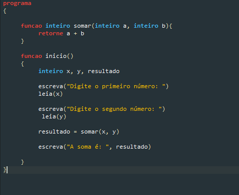
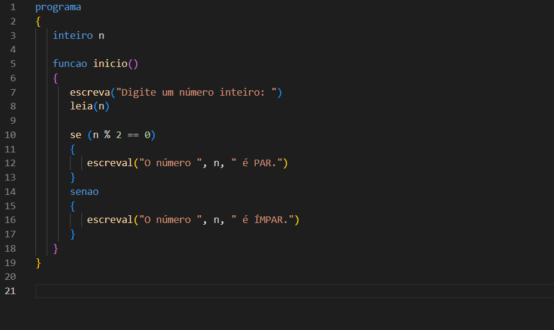
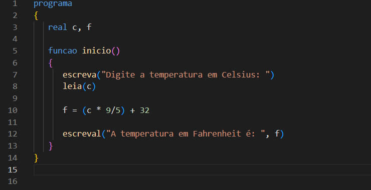

Lógica Computacional
A Lógica Computacional é a base do pensamento estruturado para a resolução de problemas em computação e programação. Ela ensina como organizar ideias, criar algoritmos e definir regras que permitem que um computador execute tarefas de forma correta e eficiente.
Estudar lógica computacional envolve aprender sobre raciocínio lógico, estruturas condicionais, operadores, sequências e tomada de decisão. Esse conhecimento é fundamental para desenvolver programas, projetar sistemas e compreender como softwares processam informações, preparando o estudante para áreas como programação, inteligência artificial, banco de dados e desenvolvimento de sistemas.
O que são fluxogramas? Qual a sua simbologia básica?
Os fluxogramas são representações gráficas de algoritmos ou processos, mostrando passo a passo como uma tarefa deve ser executada. Símbolos básicos incluem o retângulo para ações ou instruções, o losango para decisões, o oval para início e fim, e setas que indicam o fluxo. Eles ajudam a visualizar e comunicar processos de forma clara e organizada.
O que são algoritmos? Onde são usados?
Um algoritmo é uma sequência de passos ou instruções bem definidas para resolver um problema ou realizar uma tarefa. São usados em programação, automação, softwares, cálculos matemáticos e até na vida cotidiana. Todo programa de computador se baseia em algoritmos, pois eles definem a lógica que o sistema deve seguir.
O que é o Portugol? O que é o Portugol Studio?
O Portugol é uma linguagem didática que permite escrever algoritmos usando sintaxe próxima da linguagem portuguesa, facilitando o aprendizado de programação. O Portugol Studio é uma ferramenta que permite escrever, testar e executar algoritmos em Portugol de forma interativa, com ambiente visual simples e suporte a depuração.
O que são variáveis e constantes?
Variáveis são espaços de memória que armazenam informações que podem mudar durante a execução de um programa. Constantes armazenam valores fixos que não se alteram. Por exemplo, em um cálculo de área de círculo, o raio pode ser uma variável, enquanto π é uma constante. Ambos são essenciais para guardar dados temporários ou fixos nos algoritmos.
Quais os tipos de dados mais usados em algoritmos (Portugol)?
Os tipos de dados mais comuns em Portugol incluem:
Booleanos: verdadeiro ou falso.
Caracter: um único caractere, como 'A'.
Cadeia (String): textos, palavras ou frases.
Inteiro: números sem casas decimais.
Real: números com casas decimais.
Vetor: sequência de valores do mesmo tipo, permitindo organizar dados relacionados.
Apresente 3 exemplos de programas em portugol usando funções (print de tela)
Exemplo 1: Calculadora de Média
Exemplo 2: Verificador de Número Par ou Ímpar
Exemplo 3: Conversor de Temperatura
Apresente 3 exemplos de programas em portugol usando vetores (print de tela)
Exemplo 1: Maior e Menor Valor em um Vetor